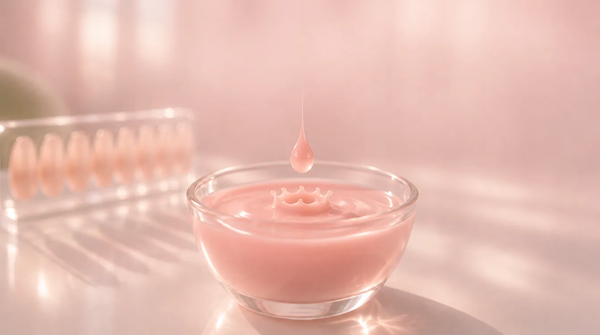
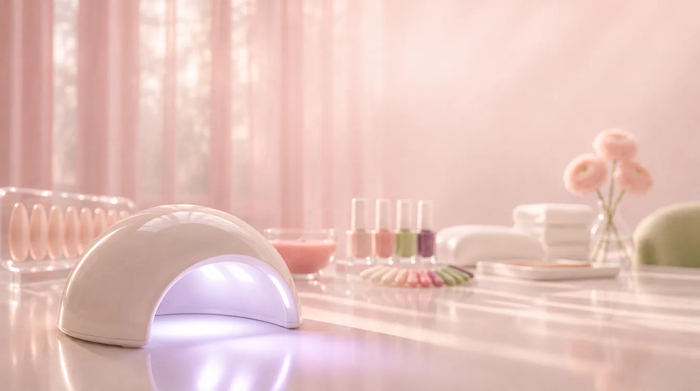
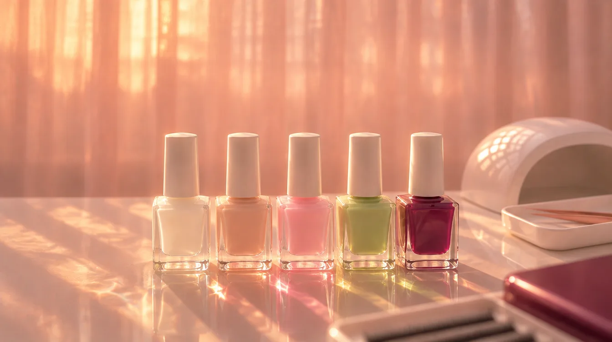
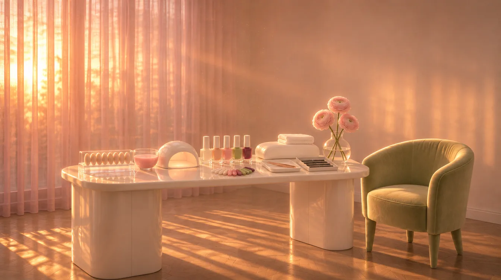
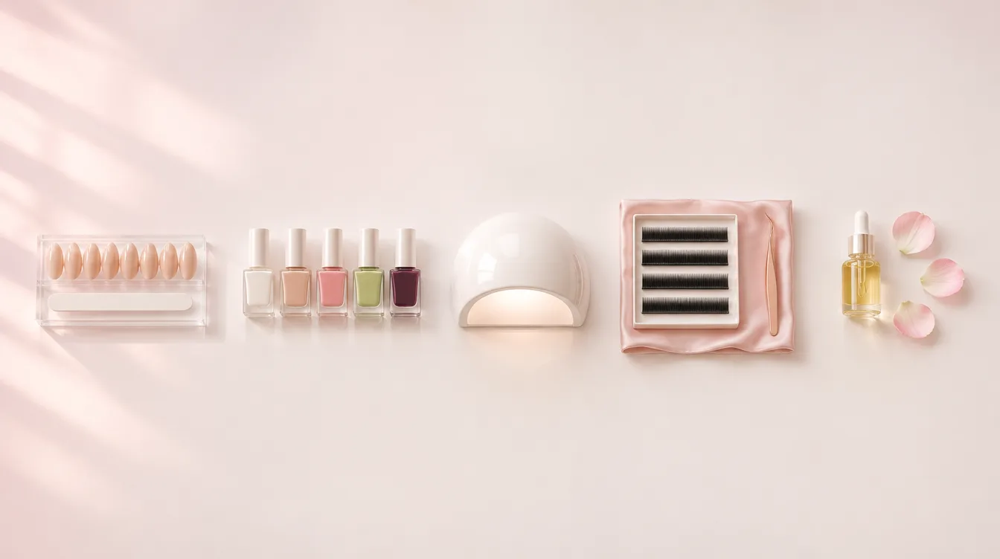

Een studio in de ochtend is een stille plek. Zacht licht door de vitrage, een opgeruimde tafel, een stoel die wacht. Zo hoort een dag te beginnen: eerst alles klaar, dan pas de eerste afspraak.
Russische manicure · Waalwijk
zoet, maar precies.
Dolché Beauty is een beautystudio aan de Molenvlietstraat in Waalwijk, voor de Russische manicure: nagels die strak tot aan de nagelriem verzorgd zijn. Vraag je afspraak online aan, of bel even.
Sommige dagen vragen om melkwit of een zachte nude, andere om roze, pistache of diep pruim. Een goede kleur past bij je huid, je werk en je humeur — en mag best elke keer anders zijn.
Bij een Russische manicure gaat de meeste aandacht naar de nagelriem en de randjes eromheen. Die worden zorgvuldig en droog verzorgd, zodat de kleur straks heel dicht bij de huid kan beginnen.
Gel wordt niet in één dikke laag aangebracht, maar in dunne lagen: een basis, kleur en nog eens kleur. Elke laag mooi glad, tot vlak bij de nagelriem. Zo blijft het licht en ziet het er natuurlijk uit.
Na elke laag gaat de nagel even onder de lamp. Daar wordt de gel hard. Geen wachten tot het droog is, geen vlekken in je tas: je loopt naar buiten en het zit.
Naast nagels gaat het bij veel beautystudio's ook om wimpers en wenkbrauwen. Of en hoe Dolché Beauty dat doet, bevestigen we nog met de salon. Benieuwd? Bel of stuur een bericht.
Als laatste komt de toplaag: die geeft de glans en beschermt de kleur eronder. Een paar druppels olie voor de nagelriemen, en je handen zijn weer helemaal van jou.
scroll — laag voor laag
 SfeerbeeldRussische manicure · Waalwijk
SfeerbeeldRussische manicure · Waalwijkzoet, maar precies.
Dolché Beauty is een beautystudio aan de Molenvlietstraat in Waalwijk, voor de Russische manicure: nagels die strak tot aan de nagelriem verzorgd zijn. Vraag je afspraak online aan, of bel even.
eerst het licht.
Een stille studio, een lege stoel, een nieuwe dag.
De rust voor de eerste kleur. Een studio in de ochtend is een stille plek. Zacht licht door de vitrage, een opgeruimde tafel, een stoel die wacht. Zo hoort een dag te beginnen: eerst alles klaar, dan pas de eerste afspraak.
 Sfeerbeeld — geen werk van de salon
Sfeerbeeld — geen werk van de salonkies je kleur.
Melkwit, nude, zacht roze — of iets met lef.
Kleur is een gevoel. Sommige dagen vragen om melkwit of een zachte nude, andere om roze, pistache of diep pruim. Een goede kleur past bij je huid, je werk en je humeur — en mag best elke keer anders zijn.
 Sfeerbeeld — geen werk van de salon
Sfeerbeeld — geen werk van de saloneen schoon begin.
Bij een Russische manicure begint alles bij de basis.
Wat je niet ziet, telt het meest. Bij een Russische manicure gaat de meeste aandacht naar de nagelriem en de randjes eromheen. Die worden zorgvuldig en droog verzorgd, zodat de kleur straks heel dicht bij de huid kan beginnen.

Sfeerbeeldlaag voor laag.
Dun, gelijkmatig, tot vlak bij de nagelriem.
Dun is sterk. Gel wordt niet in één dikke laag aangebracht, maar in dunne lagen: een basis, kleur en nog eens kleur. Elke laag mooi glad, tot vlak bij de nagelriem. Zo blijft het licht en ziet het er natuurlijk uit.

Sfeerbeelddan het licht.
Onder de lamp wordt elke laag hard.
Licht maakt het af. Na elke laag gaat de nagel even onder de lamp. Daar wordt de gel hard. Geen wachten tot het droog is, geen vlekken in je tas: je loopt naar buiten en het zit.
 Sfeerbeeld
Sfeerbeelden dan: je blik.
Wimpers en wenkbrauwen — vraag wat er kan.
Ook je blik. Naast nagels gaat het bij veel beautystudio's ook om wimpers en wenkbrauwen. Of en hoe Dolché Beauty dat doet, bevestigen we nog met de salon. Benieuwd? Bel of stuur een bericht.

Sfeerbeeldde laatste glans.
Een toplaag, en het licht doet de rest.
De glans die blijft. Als laatste komt de toplaag: die geeft de glans en beschermt de kleur eronder. Een paar druppels olie voor de nagelriemen, en je handen zijn weer helemaal van jou.



Aan het eind van het verhaal is er maar één ding over: een lege stoel aan een witte tafel, in het warme licht van het eind van de middag. Die plek is voor jou. Of je nu je nagels netjes wilt laten verzorgen, zin hebt in een nieuwe kleur of gewoon een uurtje rust zoekt — aan de Molenvlietstraat in Waalwijk zit je goed.
Een afspraak maken hoeft niet ingewikkeld te zijn. Kies wat je wilt laten doen, kies een dag en een tijd, laat je naam en nummer achter. Liever even bellen? Dat kan natuurlijk ook: 06 39 27 88 06.
De Russische manicure
schoon tot aan de rand.
Een Russische manicure draait om de randjes. Waar bij een gewone manicure vooral naar de nagel zelf wordt gekeken, gaat hier veel aandacht naar de nagelriem en de huid eromheen. Die worden droog verzorgd — zonder handbadje vooraf — vaak met een fijne elektrische vijl en heel precies werk. Losse velletjes en dode huid verdwijnen, zodat de nagel er strak en verzorgd uitziet.
Daarna komt de kleur. Omdat de rand zo schoon is, kan de gel heel dicht bij de nagelriem beginnen. Dat geeft een naadloze, nette lijn. En omdat de kleur zo laag begint, zie je de uitgroei later pas — een manicure die er langer verzorgd uitziet.
Het is precisiewerk, dus het neemt wat tijd. Maar juist dat maakt het verschil: geen haast, geen grove randen, maar een rustig uur waarin je handen echt aandacht krijgen. Hoe Dolché Beauty precies werkt en wat het kost, hoor je in de studio.
Schema — laag voor laag
- 01Nagelriem netjes — droog en zorgvuldig verzorgd, de basis van alles.
- 02Basis — een dunne laag die zich hecht aan je eigen nagel.
- 03Kleur — één of twee dunne lagen, tot vlak bij de rand.
- 04Toplaag — glans en bescherming, uitgehard onder de lamp.
Algemene uitleg over de techniek. De werkwijze van de salon zelf hoor je bij Dolché Beauty.
Kleurwaaier
welke kleur ben jij vandaag?
Tik op een tip in de waaier en zie hoe de kleur op een nagel staat. Gewoon om te spelen — kiezen doe je in de studio.
- melkwit — schoon, licht, altijd goed.
- nude — zoals je eigen nagels, maar dan op hun mooist.
- melkroze — zacht en zoet, past bij bijna alles.
- pistache — fris en een beetje onverwacht.
- pruim — diep en rustig, voor de donkere maanden.
- koraal — zomer, ook als het regent.
- lila — speels, licht en vrolijk.
- rood — klassiek. Hoeft geen uitleg.
Voorbeeldkleuren — de kleuren van Dolché Beauty zie je in de studio
Voorbeeldkleurmelkroze
zacht en zoet, past bij bijna alles.
Vorm
rond, ovaal of amandel?
Ook de vorm maakt veel uit. Tik op een vorm om te zien hoe hij eruitziet.
Slank met een zachte punt. Elegant, ook op kortere nagels.
- rond — Kort en makkelijk. Handig als je veel met je handen doet.
- ovaal — Zacht en vrouwelijk, laat vingers langer lijken.
- amandel — Slank met een zachte punt. Elegant, ook op kortere nagels.
- kort vierkant — Strak en modern, met zachte hoekjes.
Een idee, geen advies — in de studio kijk je samen wat bij je nagels past.
Behandelingen
van de basis tot de glans.
De Russische manicure staat op de Fresha-pagina van Dolché Beauty. Hieronder zie je ook wat je bij een beautystudio vaak kunt laten doen — de precieze lijst en prijzen volgen nog van de salon.

Sfeerbeeld — geen werk van de salonRussische manicure
Droge, precieze verzorging van nagelriem en nagel.
volgens Fresha · prijs op aanvraagSfeerbeeld
Russische manicure met gellak
Strak tot aan de rand, in de kleur die jij kiest.
voorbeeld · prijs op aanvraagSfeerbeeld
Versteviging
Een stevigere laag gel op je eigen nagels.
voorbeeld · prijs op aanvraagSfeerbeeld
Wimpers
Voor een open, verzorgde blik.
nog te bevestigen · prijs op aanvraagSfeerbeeld
Wenkbrauwen
In vorm, zodat je gezicht rust krijgt.
nog te bevestigen · prijs op aanvraagRussische manicure volgens Fresha · de rest voorbeeldAlle behandelingen
Online afspraak
in vier tikken aangevraagd.
Geen wachten tot iemand opneemt, geen gedoe. Je kiest zelf een moment dat jou uitkomt, ook ’s avonds op de bank of in je pauze.
- 01BehandelingWat wil je laten doen?
- 02Dag & tijdKies een moment dat jou past.
- 03Je gegevensNaam en telefoonnummer, meer niet.
- 04BevestigdJe ziet meteen je aanvraag terug.
Op Fresha staat Dolché Beauty met ‘bel om te boeken’. Met deze site kunnen klanten straks ook online een moment aanvragen.
Adres
aan de molenvlietstraat.
Je vindt Dolché Beauty aan de Molenvlietstraat 1 in Waalwijk. Kom je op de fiets of combineer je het met boodschappen? Vraag dan vooraf je afspraak aan, dan staat je plek klaar als je binnenkomt.
De openingstijden zetten we hier zodra Dolché Beauty ze heeft doorgegeven. Tot die tijd: bel even naar 06 39 27 88 06 of kijk op Instagram.
Molenvlietstraat 15142 EL Waalwijk
06 39 27 88 06bellen
Instagram@dolchebeauty.nl
Openingstijdenvolgen

Molenvlietstraat 1 · Waalwijk
tot zo aan de tafel.
Vraag je afspraak online aan in een minuut, of bel even als je liever iemand spreekt. Je vindt Dolché Beauty aan de Molenvlietstraat 1 in Waalwijk.